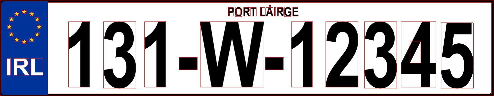
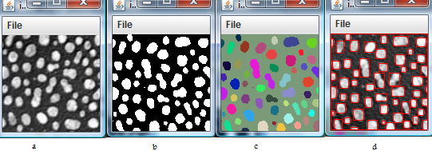
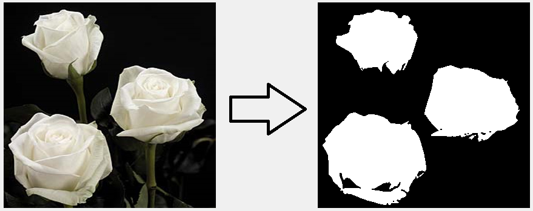
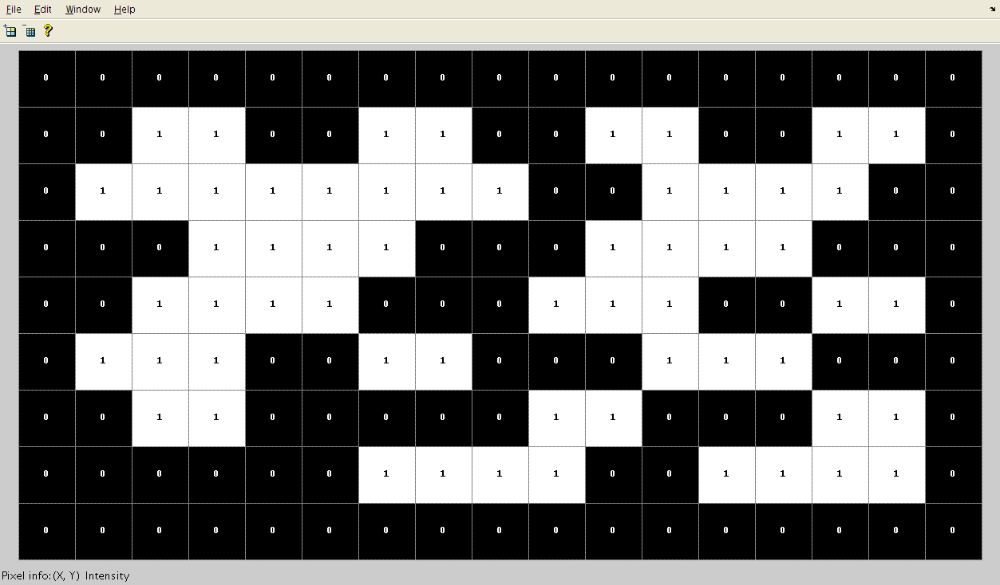

In this assignment you will use the Union-Find algorithm to develop a Java program that can:
Connected Component Labeling is a well known approach in image processing and computer vision. It can be used in various applications, for example detecting objects on a conveyor belt or locate characters on a registration plate. The Union-Find algorithms can be used to implement connected component labeling. In this assignment you will develop a Java program that can:

You are required to develop a class, ComponentImage, that has the following API:
| Type | Method | Description |
|---|---|---|
| ComponentImage(String fileLocation) | initialise the ComponentImage using image file location. | |
| int | countComponents() | returns number of components in the image |
| Picture | binaryComponentImage() | creates binary image representation of original image |
| Picture | colourComponentImage() | creates coloured image representation of original image |
| Picture | highlightComponentImage() | creates image with Components highlighted by red box |
An example of what the output should look like is as follows:

You are required to use an union-find algorithms to identify and count the number of items in an image. You MUST conform to the API in the above table - failure to do so will result in a loss of marks. You can use the following starter code and images if you wish.
You are recommended to implement the above API in the order that the methods appear. Furthermore, you are requested to follow a Test Driven Development approach, incuding a comprehensive JUnit test with full test coverage. The following steps will give you guidelines to accomplish this.
The Picture class is part of the stdlib-package.jar and can be used to represent most image files (e.g. jpg,bmp) in a Java program. For example, the following code will create a Picture object in your program by reading in a .jpg from the given filename or URL.
Picture p = new Picture("C:\some_folder\my_pic.jpg")Furthermore, the Luminance class allows us to convert from colour to greyscale. Examples of image processing using these classes can be found here.
Translating an image to a binary form can be used to find items in an image. For example, if there is enough contrast in colour between items of interest and background then we can choose a threshold value and change all pixel values greater than threshold to white , otherwise set value to black.

All components in a binarised image will have the same pixel values - either black or white. By representing each pixel as a ‘site’ or element in a Union-Find data structure, we can track and count the components in an image by connecting pixels that are beside each other and have the same value.

So an approach to use union find would be as follows:
Create a git repository called algorithms-assign1 on Github or Bitbucket and submit the URL of this repository via the assigment link in Moodle.
If you use Github, you can create free public repositories. If you wish to keep your submission private, use Bitbucket but you must share your repository with you tutors on Bitbucket: fxwalsh and edel020.
The table below shows a general marking scheme that will be applied to your submission.
| Feature: | Coding Style and Conformity to spec. | Read in Image | Compute Binary Image | Application of Union-Find to Image | Correct Component Count using Union Find | Coloured Components Image | Highlight Components | Testing and Test Coverage | Advanced Features (e.g. GUI) | |
|---|---|---|---|---|---|---|---|---|---|---|
| Marks: | 5 | 5 | 15 | 15 | 5 | 15 | 10 | 15 | 15 | 15 |